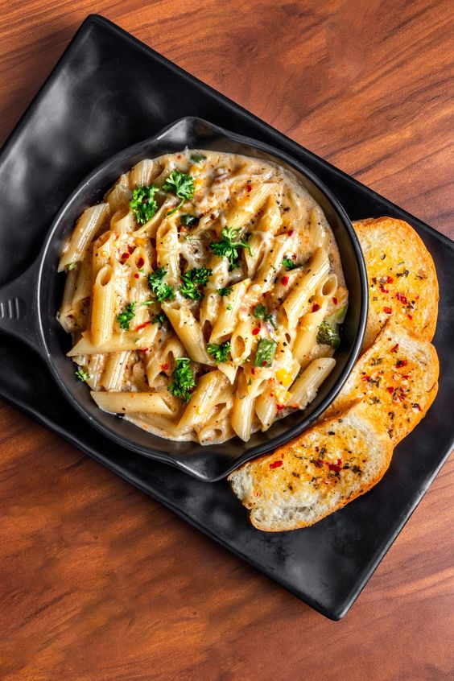

White Sauce Pasta

Description
White sauce pasta, also known as pasta alla panna or pasta alfredo, originated in Italy during the early 20th
century, popularized by Alfredo di Lelio at his restaurant, Alfredo alla Scrofa, in Rome. Initially a simple
dish of fettuccine tossed with butter and Parmesan cheese, it evolved over time with the addition of heavy cream
or milk to create a creamy white sauce. This adaptation led to the creation of the indulgent and versatile white
sauce pasta we know today.
White sauce pasta quickly gained popularity both in Italy and internationally, becoming a beloved comfort food
staple. Its creamy texture and comforting flavor profile make it a favorite in Italian-American and global
cuisine. With variations incorporating a range of ingredients like vegetables, chicken, shrimp, and mushrooms,
white sauce pasta continues to be enjoyed in homes, restaurants, and eateries worldwide as a classic and
satisfying dish.
Ingredients
For White Sauce
- 2 tablespoons Butter – salted or unsalted
- 1 tablespoon whole wheat flour or 2 tablespoons all-purpose flour
- 1 cup whole milk – cold or chilled
- ¼ teaspoon black pepper powder or add as required
- 1 generous pinch of nutmeg powder (ground nutmeg) or grated nutmeg
- salt as required
For Cooking Pasta
- 1 cup penne pasta – 100 grams
- 4 cups water
- ¼ teaspoon salt or add as required
More Ingredients
- ¼ teaspoon dry oregano
- ¼ teaspoon dried basil
- ¼ teaspoon dried thyme
Steps
Making White Sauce
- Heat a saucepan. Keep the heat to a low and add the butter.
- When the butter melts and starts to bubble, then add 1 tablespoon whole wheat flour or 2 tablespoons
all-purpose flour.
- Using a wired whisk stir the flour quickly as soon as you add it. Keep on stirring so that no lumps are
formed.
- The frequent stirring helps the flour to cook evenly. You will see the flour frothing and bubbling up while
stirring.
- Sauté the flour till you get a nice cooked aroma from the flour and a pale golden color. Don't brown the
flour.
- Keep the heat to the lowest and then pour the cold or chilled milk in a gentle stream. Pour the milk with
one hand and stir the sauce mixture with the other.
- The milk has to be chilled, so that lumps are not formed. If you use hot or warm milk or milk at room
temperature, lumps can be formed.
- Do stir frequently while the milk warms and heats up.
- On a low heat, simmer the sauce till it thickens.
- When the sauce has thickened well and coats the back of a spoon, turn off the heat.
- Keep the saucepan on the kitchen countertop and add the seasonings – ¼ teaspoon black pepper powder, a
generous pinch of nutmeg powder or grated nutmeg and salt as required.
- To make a cheese sauce, you can add 2 tablespoons of grated cheddar cheese or 1 tablespoon of grated
vegetarian parmesan cheese.
- Mix very well and set aside. Do note that on cooling white sauce will thicken more. So you can keep the
consistency accordingly.
Cooking Penne Pasta
- Boil 4 cups water with ½ teaspoon salt in a pan.
- When the water comes to a boil, add the penne pasta.
- Cook the pasta on a medium to high heat or according to package instructions.
- When the pasta gets done to an al dente texture, turn off the heat. For a softer texture, you can cook the
pasta more if required.
- With a large strainer spoon, strain the pasta, draining all the water.
Make White Sauce Pasta
- Add the cooked pasta to the white sauce.
- Add ¼ teaspoon each of dried oregano, dried basil and dried thyme. You can add your choice of herbs.
- At this step you can even add some steamed or cooked or sautéed or roasted veggies.
- Mix very well.
- Serve white sauce pasta garnished with some fresh herbs like parsley, chives or dill. You can also garnish
with some grated cheddar cheese of you like.